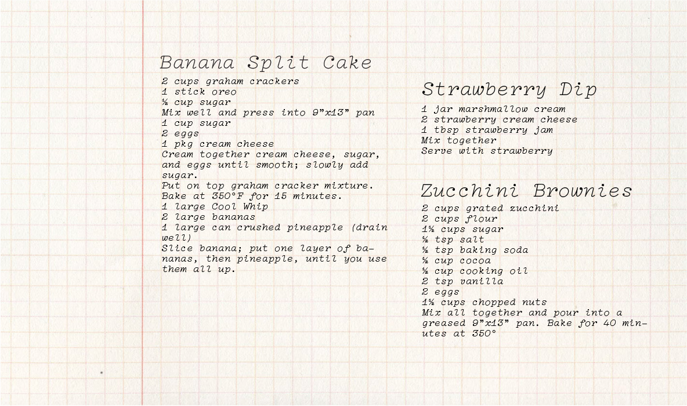
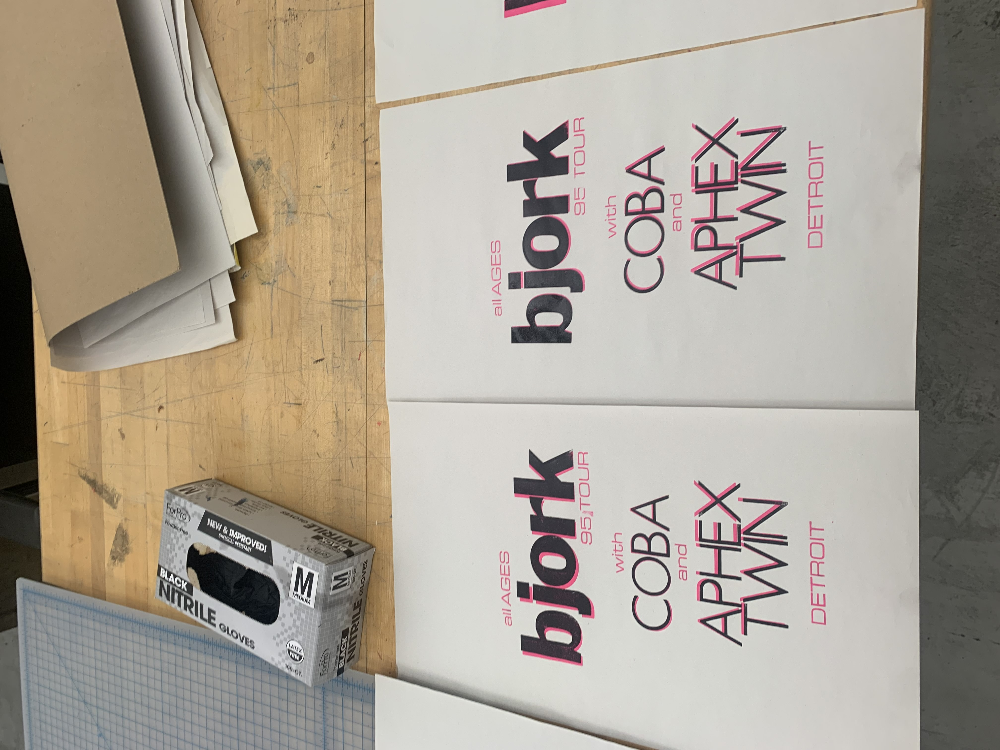
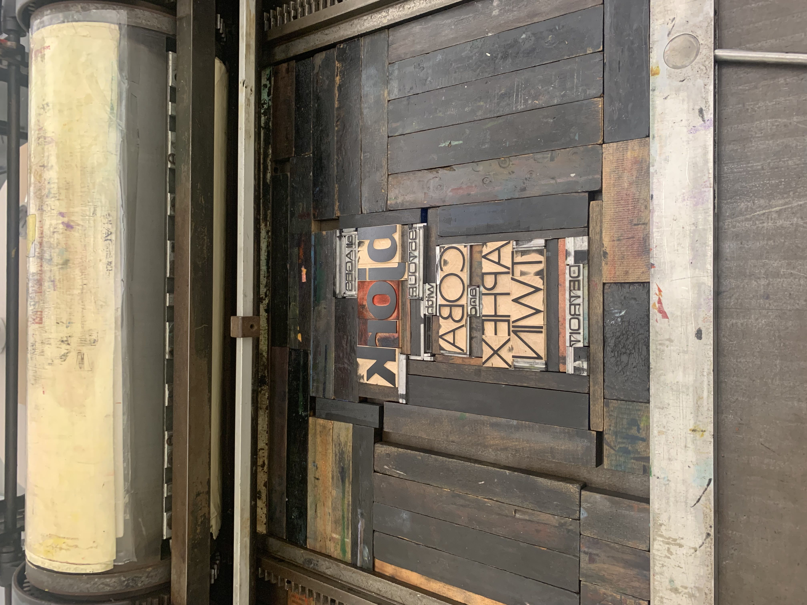
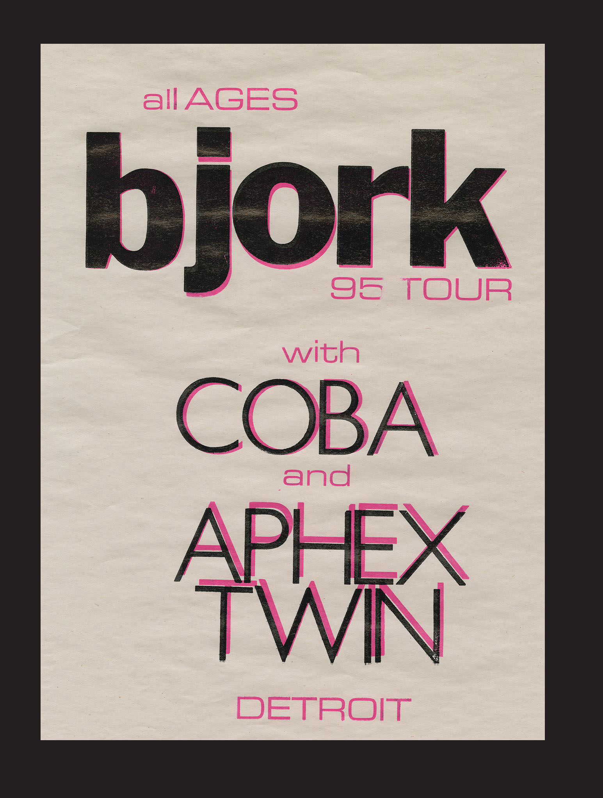
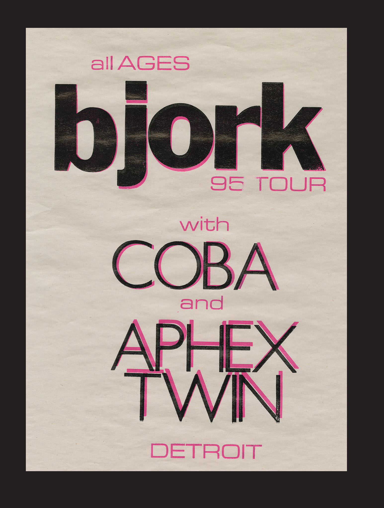

Letterpress Recipe Cards
Fall 2023
This project was inspired by my grandmother's cherished recipes, which she has meticulously preserved on hand-written notes stored in a small box in her spice cabinet. Over the years, these notes have become nearly illegible due to food and ink stains, rips, and tears, rendering these valuable pieces of our family's history almost unusable.
To preserve and honor these recipes, I chose to use the traditional technique of letterpress printing, which adds a tangible and lasting quality to the text. I hand-printed three recipe cards, using 10-14 point font weights to ensure clarity and readability, while maintaining the integrity of the original handwritten notes.



Concert Poster
Fall 2023
Drawing inspiration from an authentic concert poster dating back to 1995, I blended metal and wood types to craft a captivating visual hierarchy. My aim was to fashion a design that was simultaneously sleek and attention-grabbing, employing a restrained palette of colors and fonts. Utilizing letterpress techniques, I applied a combination of black and hot pink inks, manipulating the paper through varying angles within the press to evoke a striking dimensional quality. Additionally, I opted for newsprint paper to imbue the final piece with the weathered charm reminiscent of vintage concert posters.
 Miscellaneous Prints
Fall 2023


 
